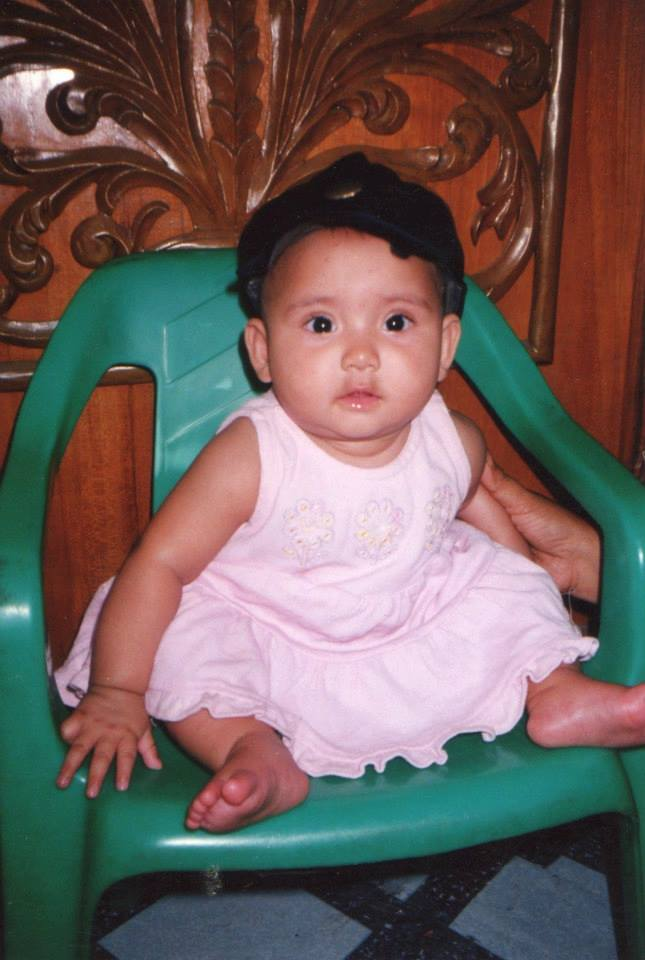
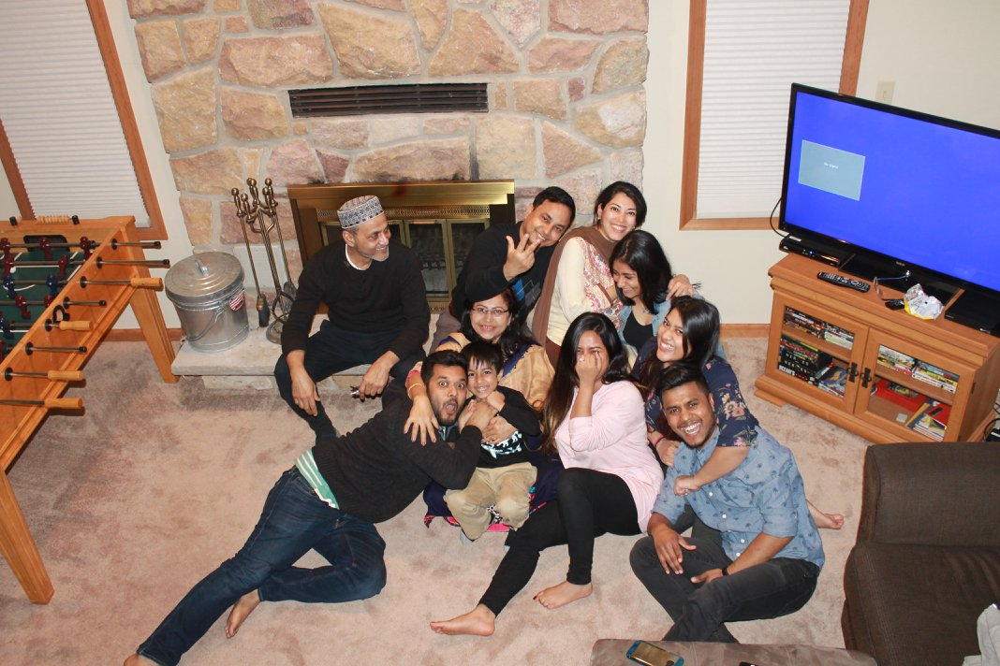
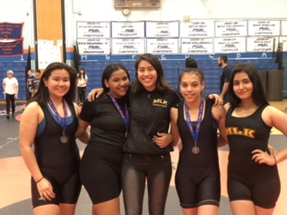

Favorite Things
Favorite color: Green
Favorite cake: Tres leches
Favorite food: Fried Shrimp
Favorite artist: The Weeknd
Favorite movie: She's the Man

Afroza Nishi was born on October 14th in Chittagong Hospital of Bangladesh. She lived in Bangladesh until 2004 when she moved to America with her mom, dad and sister.
 In 2005 Afroza started Pre-School at P.S.171.
In 2007 she started Elementary School at P.S.36.
In 2012 she started Middle School at P.S.127.
In 2015 she started High School at Hunter.
In 2019 she will hopefully start College at NYU.
Afroza lives with her parents Haron and Mary in Parkchester Bronx. She has an older sister who is almost a deacde older than her.Afroza and her family get along very well.The picture depicts Afroza's entire extended family.
In her freshman year of high school Afroza joined the school wrestling team and in her junior year she became the capatain of the girls wrestling team.
 Favorite color: Green
Favorite cake: Tres leches
Favorite food: Fried Shrimp
Favorite artist: The Weeknd
Favorite movie: She's the Man